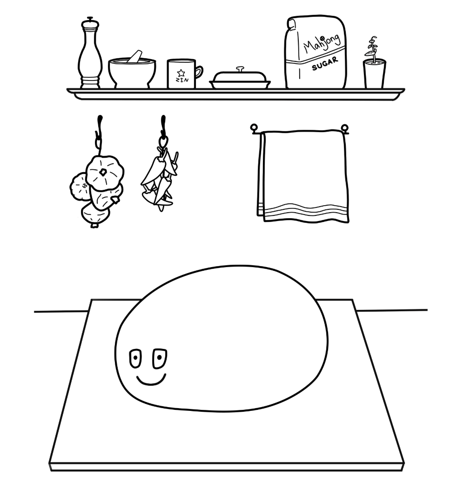
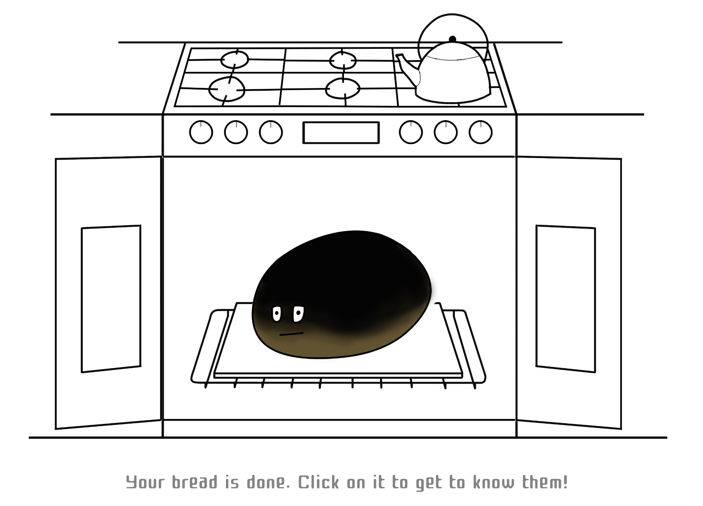
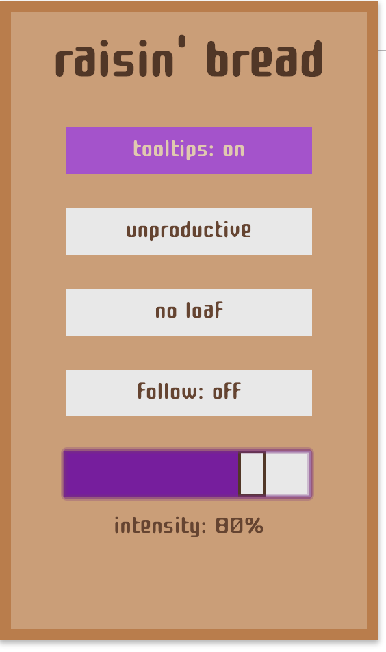

raisin' bread
I worked on Raisin’ Bread, a productivity tracking browser extension, with three other students as the final project for CS0320 Introduction to Software Engineering. We spent three weeks designing and developing the extension. I was primarily responsible for designing the frontend, which consisted of three main features: an options menu, data visualizations, and gamification.
Drawing inspiration from Tamagotchi pets, we wanted to create a creature that users would care for by spending time on productive websites. I-f users visited unproductive ones, their pet would become malnourished. The way users spend their time online determines the health and happiness of their pet.
Like Tamagotchis, we knew wanted the dough to ultimately evolve into a unique form. However, it seemed difficult to create a set of new characters in the time span we had. After a few mock-ups of the pet, we decided to make pet bread. Users begin with an unformed lump of dough that with time and care, can be raised into bread. If users are unproductive, their bread may come out of the oven burnt.
I worked on creating a control panel. This would allow users to customize things to fit their mood and context. Users can choose to whitelist/blacklist the current site, have their bread follow them from site to site, and increase the intensity of the game.
After feedback from initial user studies to create, we added the intensity feature to promote balance between work and rest. Increasing intensity will emphasize the influence that unproductive sites have on your productivity while decreasing it will allow the user to relax the constraints of productivity.